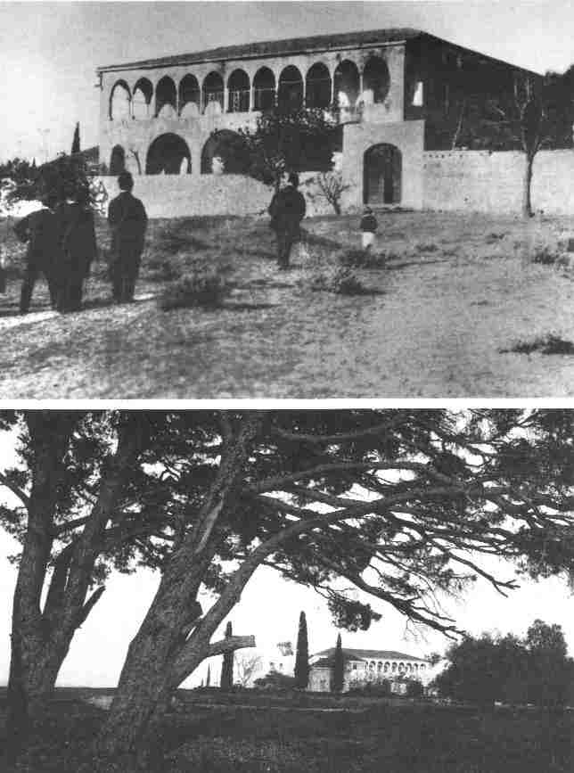
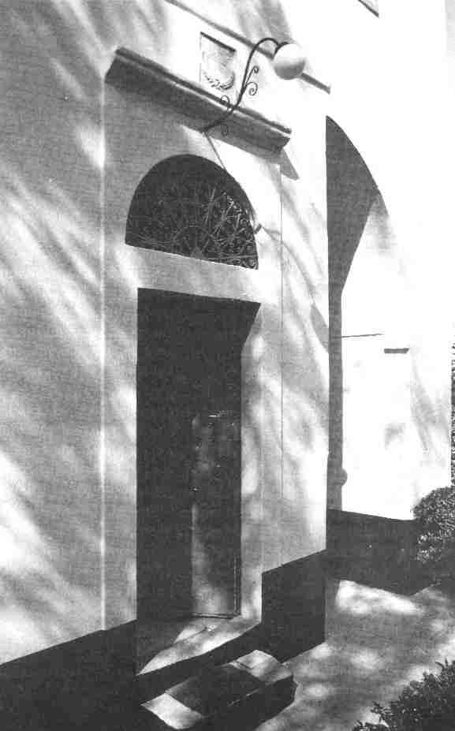
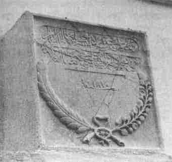
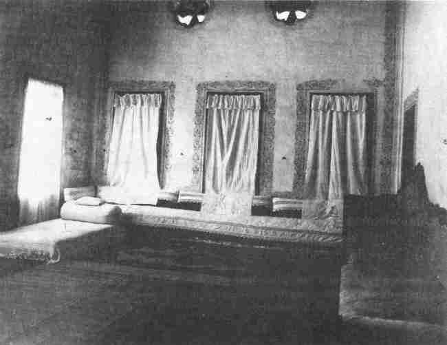
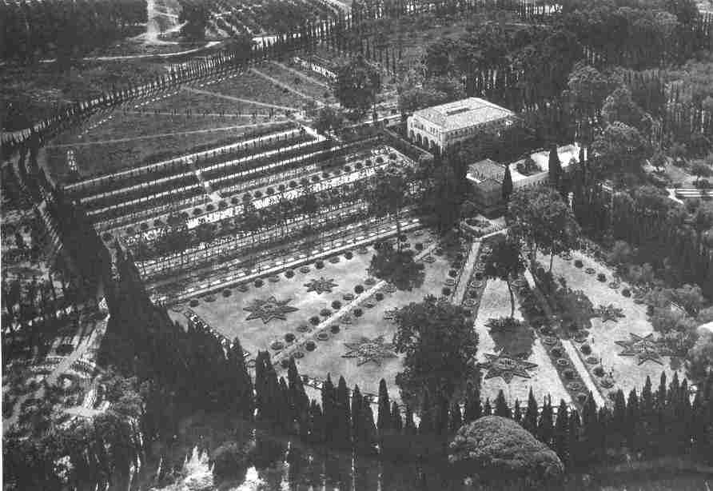

The Mansion of BahjíA few miles outside 'Akká stands a beautiful mansion surrounded by magnificent landscaped gardens. Next to it at the centre of converging avenues bordered by beautiful flowers, shrubs and trees in that same garden, stands a small building, the Shrine of Bahá'u'lláh. There His earthly remains are laid to rest, and for the Bahá'ís it is the holiest spot on earth. Today Bahá'í pilgrims from all over the world come to pray at the Shrine of Bahá'u'lláh and visit the Mansion. Bahá'u'lláh moved to this Mansion in September 1879 and lived there almost thirteen years till 1892, the end of His life. But there were no formal gardens in His time; these were created after His ascension. Nevertheless, the Mansion was built in the countryside close to some beautiful pine trees away from the forbidding city of 'Akká with its narrow gloomy streets and its depressing atmosphere. 'Údí Khammár, in whose house Bahá'u'lláh resided for several years in 'Akká, built the Mansion for himself and his family. The appellation Bahjí (Delight) is truly appropriate for this Mansion when one considers the beauty of the open fields around it, the charm of the building itself and the pleasing sight of the pine trees close by, some of which still stand in the grounds. Towards the end of Bahá'u'lláh's residence in the Mansion of Mazra'ih, an epidemic broke out in the area. People panicked. Many left their homes and many died. 'Údí Khammár died and was buried by the wall of the Mansion of Bahjí. Soon after this 'Abdu'l-Bahá rented the Mansion for Bahá'u'lláh. The inscription |
|
|
|
in Arabic placed by Khammár over the entrance in 1870 can be seen in no other light than an inspirational sentiment foreshadowing all the wonderful events which were to take place within its walls. It says:
Greetings and salutations rest upon this mansion which increaseth in splendour through the passage of time. Manifold wonders and marvels are found therein, and pens are baffled in attempting to describe them.Shoghi Effendi, the Guardian of the Bahá'í Faith, writes:
...the palace of 'Údí Khammár, on the construction of which so much wealth had been lavished, while Bahá'u'lláh lay imprisoned in the barracks, and which its owner had precipitately abandoned with his family owing to the outbreak of an epidemic disease, was rented and later purchased for Him--a dwelling-place which He characterized as the 'lofty mansion,' the spot which 'God hath ordained as the most sublime vision of mankind.' 1In one of His Tablets2 Bahá'u'lláh describes the Mansion as the scene of His transcendent glory and asserts that it was specially built to serve as the Seat of God in His Day. He refers to its builder, 'Údí Khammár, stating that during his life he had no idea for whom he was building it. He bestows the bounties of God upon his soul through His loving-kindness. He rebukes His enemies, who through their waywardness and ignorance had condemned Him to life imprisonment in the Most Great Prison. However, as a sign of His sovereignty and power He has transformed the prison into a lofty Mansion. He further states that he who was the ruler (i.e. Sultán 'Abdu'l-'Azíz) had returned to the fire of hell, while the builder of the Mansion was taken under the canopy of God's mercy and favours. Before moving to the Mansion of Bahjí, Bahá'u'lláh's residence was at Mazra'ih. But at the actual time of the move to Bahjí He was staying in 'Akká, and it was from the city that He set off for the Mansion. It must be remembered that during the period when Bahá'u'lláh lived in the Mansions of Mazra'ih and Bahjí, He |
1. God Passes By, p. 193. 2. Áthár-i-Qalam-i-A'lá, vol. 5, p. 135. |
|
|
used to go to 'Akká from time to time and stay there for various lengths of time. Núru'd-Dín-i-Zayn, the son of one of the Apostles of Bahá'u'lláh, Zaynu'l-Muqarrabín, has left to posterity the following account of Bahá'u'lláh's movements in 'Akká and its surrounding areas.
Normally, during the spring, summer and part of the autumn season, the Blessed Perfection resided in the Mansion of Bahjí and the remainder of the year in the city of 'Akká. He used to ride a white donkey. It was called Barq {lightning} because of its ability to move fast. Any time He went from the Mansion to the Garden of Ridván, to Mazra'ih, to the Garden of Junaynih, or to 'Akká, He rode on that donkey, and returned in the same way to the Mansion. On these trips a servant always accompanied Him. Later when Barq died they brought another donkey from Persia...it was called Ra'd {thunder}.3In a Tablet4 Bahá'u'lláh declares that through the power of His sovereignty, He left the prison-city in spite of the Sultán's decree. His footsteps ennobled the Mansion and the Garden of Ridván. But because He had been accustomed to life in the prison-city, He chose to return there from time to time. In several of His Tablets Bahá'u'lláh indicates that through the years He had become attached to calamities and sufferings. In one instance5 He declares that He was as fond of sufferings as a lover is of his beloved. In another6 He states that He is attached to adversities and afflictions as a suckling child is to his mother's milk or a thirsty one longs for a fount of water. In a Tablet7 written in the words of Mírzá Áqá Ján, His amanuensis, it is stated that it is beyond man to comprehend the ways of God. For instance, Bahá'u'lláh had been to the Garden of Ridván and the Mansion, but on one occasion He said that He preferred to be in the Most Great Prison. The Arrival of Bahá'u'lláh at Bahjí Returning to the story of Bahá'u'lláh transferring His residence to |
3. Masábih-i-Hidáyat, vol. 5, pp. 456-7. 4. Asráru'l-Áthár, vol. 4, p. 52. 5. Áthár-i-Qalam-i-A'lá, vol. 1, p. 302. 6. Unpublished compilation, National Archives Committee, no. 73, p. 338. 7. Má'idiy-i-Ásamání, vol. 8, pp. 147-8. [Ridván] The Kitáb-i-Aqdas; The Kitáb-i-Íqán; Prayers and Meditations, p. 6; Gleanings From The Writings Of Bahá'u'lláh, p. 31; The Revelation of Bahá'u'lláh, vol. 1, 2, 3, 4 |
|
|
the Mansion of Bahjí, it was 'Abdu'l-Bahá who had rented the Mansion, and prepared it for Bahá'u'lláh's arrival. First, members of His household moved in. This did not include 'Abdu'l-Bahá, His mother or His sister, the Greatest Holy Leaf; these all remained in 'Akká. When all arrangements were completed Bahá'u'lláh moved to the Mansion. He left the House of 'Abbúd, passed through the Land Gate of 'Akká and arrived at Bahjí in the evening. Hájí Muhammad-Táhir-i-Málmírí, who was in 'Akká at the time, used to live in a room next to Nabíl-A'zam's in the vicinity of the Súq-i-Abyad. Their rooms were next to each other; in practice they shared both rooms. Their rooms overlooked the street through which Bahá'u'lláh passed on His way to the Mansion of Bahjí. In his memoirs Hájí Muhammad Táhir describes an amazing episode connected with Bahá'u'lláh's arrival in the Mansion. The event may be regarded as one of the highlights of his nine months' pilgrimage in the presence of the Blessed Beauty. He writes:
On the evening that the Blessed Beauty, exalted be His glory, was to move to the Mansion of Bahjí, this servant and Nabíl-i-A'zam were staying at our residence, which was a room we both shared. It was situated on the upper floor of the Khán-i-Súq-i-Abyad. The room had five glass windows overlooking the road. We were both sitting at the windows looking out, waiting to behold His blessed Person as He passed by. It was nearly two hours after sunset, when we saw Him pass in front of our room riding on a special white donkey. A few steps behind Him, riding on, his donkey, was Khádimu'lláh (the Servant of God) Mírzá Áqá Ján. When He passed out of our sight, Nabíl suggested that we follow Him on foot to the Mansion to circumambulate it and then return home. With much enthusiasm I welcomed the suggestion. We both ran down the stairs immediately and walked quickly behind Him, keeping a distance of about fifty steps. That evening an oil lamp was burning inside the Mansion and we could see its light from outside. It was a very large oil lamp which had three wicks. I was familiar with this lamp because we {Hájí |
||
Muhammad Táhir and Muhammad Khán-i-Balúch} had brought it with us to the Holy Land. It was presented to the Blessed Beauty by Hájí Siyyid Mírzáy-i-Afnán from Bombay. When the Blessed Perfection dismounted and went inside the Mansion, we walked toward the building in order to circumambulate. But when we came a little closer we saw to our amazement that the footpaths around the walls of the Mansion were packed with people, who were standing. Crowds had assembled around the four sides of the Mansion and we could hear their murmuring as well as their breathing. Of course we knew that no one had come from 'Akká to circumambulate the Mansion, and we two had gone there without permission. Anyhow, since there was no room to walk on the footpath we stepped back, and at a distance of about thirty steps from the Mansion we circumambulated. To do this we had to walk in some wheatfields and, as it happened, the ground had been recently watered, so we had to walk through muddy fields. As we circled the Mansion we could sense the presence of the multitude on the four sides of the building at some distance from us. In the end we prostrated ourselves on the ground opposite the Gate of the Mansion, and returned to 'Akká. On the way back heavy rain poured down on us, and just as we arrived at the gate of 'Akká, the guards were about to close it. Normally they used to close the gate every night four hours after sunset. |
* The practice of keeping vigil at night is carried out to commemorate a sacred event which has taken place at night. For example, one such event is the ascension of Bahá'u'lláh, which took place in the early hours of the morning. (A.T.) † In the old days solid sugar was made in the form of a large cone. It was a very popular gift to present to friends. (A.T.) |
|
Beauty. His poems were mainly about history, the history of Bahá'u'lláh's imprisonment, His banishment to Baghdád, Istanbul, Adrianople and 'Akká, the sufferings He had endured in the barracks, the story of the building of the Mansion by 'Údí Khammár, and 'Abdu'l-Bahá renting it to serve as a residence for the Blessed Perfection.Circumambulation of the holy places is an act of devotion and love. It is an expression of the individual's humility, submissiveness and adoration toward the Holy Ones. It is also a sign of one's utter dependence on them. We note that the same act takes place in nature. A satellite circles around a planet and is held in orbit by the force of attraction. It originates from, and its very existence depends upon, the planet. There is a special relationship between the two: one acts as the master, the other as a servant. We have in previous volumes described the greatness of the Revelation of Bahá'u'lláh and the exalted station of its author. It was He at whose advent 'the hearts of the entire company' of God's Messengers and Prophets were proved, 'whose presence' Moses 'hath longed to attain', for 'whose love' the spirit of Jesus 'ascended to heaven', and the Day of whose Revelation 'all the Prophets and the Chosen Ones, and the holy ones have wished to witness'.* The Author of such a transcendent Revelation has, in many of |
* For further discussion see vols. 1, 2, 3 and below, pp. 125-39. |

Above: local Bahá'ís and pilgrims approaching. |
|
|

The doorway of the Mansion (above) with detail (below) of
|
 |
|
|

Bahá'u'lláh's room inside the Mansion where he received |
|
|
A modern photograph showing the Shrine of Bahá'u'lláh |
|
His Tablets, described how the souls of God's Messengers and the company of the Concourse on high circumambulated His throne of sovereignty. Of course this is not a physical circling around such as could be seen in this life. It may be regarded as one of the many mysteries which surround the Supreme Manifestation of God. The early believers who had the inestimable bounty of attaining His presence sometimes witnessed supernatural events at one time or another through His special favours, events which completely overwhelmed their souls and which they recorded in their memoirs. But these may be considered as personal experiences only; they are not valid for others. The story of Hájí Muhammad-Táhir and Nabíl falls into this category. They had the vision in which they saw the souls of the Prophets and the company of the Concourse on high circling around the Mansion at the time that Bahá'u'lláh ascended the throne of His sovereignty in that hallowed spot. But such a soul stirring experience is valid for those two privileged souls only: it can never be adduced as a conclusive proof of the station of Bahá'u'lláh. We have already discussed this subject in a previous volume:* miracles are not a proof of the authenticity of the Manifestation of God. If miracles take place, they are proof only for those who witness them. Bahá'u'lláh has explained that the proof of the sun is the sun itself; similarly, He states that the proof of the Manifestation of God is in the first place His own Self; in the second place, His Revelation; and for those who are in need of further proof, His words. Those who attained the Presence of Bahá'u'lláh with pure hearts and spiritual vision had the bounty of being able to recognize Him through 'His own Self'. As a result of coming in contact with His Person these believers became a new creation completely detached from the things of this world, intoxicated by the wine of His presence and carried away into new realms of the spirit. They enjoyed such nearness to the Blessed Beauty that they became the intimates of His mysteries. Some of them saw |
||
|
glimpses of His hidden glory and power and were awestruck at the revelation of His supreme station. An Outpouring of Divine Bounty The transfer of Bahá'u'lláh's residence to the Mansion of Bahjí begins a new and final chapter in His Ministry which constitutes one of the most glorious periods in His life. The King of Glory, the Supreme Manifestation of God, ascended the throne of His sovereignty, the spot which 'God hath ordained as the most sublime vision of mankind'. It was here that the majesty of Bahá'u'lláh and His grandeur were outwardly manifested to both friend and foe. And it was here that the climax of forty years of Revelation was consummated. The verses that streamed from His Pen and the Tablets which were revealed in the latter part of His life released a special potency through which the teachings and principles of His Faith were further enunciated in conjunction with the laws of the Kitáb-i-Aqdas, and through which their application to the building of His new world order became apparent. The prodigious outpouring of the Word of God during Bahá'u'lláh's residence in the Mansion of Bahjí staggers the imagination. The rapidity with which His Tablets were revealed, the manner in which His amanuensis, Mírzá Áqá Ján, though devoid of a proper education, was empowered by Him to cope with recording His words at an amazing speed,* the zeal and enthusiasm with which several of His servants spent long hours every day in transcribing His Writings, all these resulted in the dissemination of innumerable Tablets unprecedented in their range and content during any period of His Ministry. Parallel with the revelation of divine verses, which released their creative energies within human society in general and the Bahá'í community in particular, was the inestimable bounty experienced by a considerable number of His devoted followers of attaining His presence in an atmosphere of freedom and delight. Those who |
* For further information see vol. 1, chapter 3. |
|
|
were privileged to come into contact with the divine spirit were magnetized by the energizing forces radiating from His Person. Each one became a new creation and returned home with a new vision and capacity enabling him to scale loftier heights of service in His path. These two sources of divine bounty--the Person of Bahá'u'lláh on the one hand and His Revelation on the other--endowed the Bahá'í community with a vigour and vitality which it had never experienced before. The many soul-stirring Tablets revealed in this period inspired and enraptured their recipients and transformed them into spiritual giants who, in turn, were able to set on fire the hearts of their fellow believers and thus create a dynamic and flourishing community in Persia. The Cause of God was then securely established in the land of its birth. The teaching exploits of some of its outstanding teachers were highly successful. The expansion of the community, in spite of much persecution, was taking place at a remarkable pace, and the pernicious influence of Mírzá Yahyá in creating dissension and doubt had been reduced to a considerable extent. Above all, the prestige of the Faith and its Author in the Holy Land had been mounting steadily towards a climax, ushering in the last and the most momentous chapter in the history of the Revelation of Bahá'u'lláh. The Revelation of Bahá'u'lláh may be likened to a tree which in the early years of His Ministry in Baghdád and Sulaymáníyyih had produced its blossoms in a magnificent display of beauty and splendour, dazzling the eyes of those enchanted lovers who were endowed with spiritual vision. They were awestruck as they gazed at its glory and became conscious of its hidden potentialities. Later, towards the end of His sojourn in Adrianople and within the citadel of 'Akká, this tree of divine Revelation yielded its choicest fruits. And now during the latter part of His Ministry when He was residing in the Mansion of Bahjí, the fruits of this exalted tree were ripening and were ultimately garnered. His Mission was coming to a climax and His Revelation reaching its consummation as His earthly life neared its close.
|
||
|
Since its beginnings in the Síyáh-Chál of Tihrán the outpouring of the Revelation of Bahá'u'lláh had continued at different periods. This latter part of His Ministry served to crown the inestimable bounties which God had chosen to bestow upon humanity in this Dispensation. Indeed, everything which needed to be revealed by God for humanity in this age has been revealed. In a Tablet in honour of His Trustee, Hájí Abu'l-Hasan-i-Amín,8* Bahá'u'lláh states that the bounty of God has so encompassed the peoples of the world that the meanings and the inner meanings of every word, every statement and every mystery revealed by Him, have been divulged in this day. It is interesting to note that for reasons that Bahá'u'lláh Himself has given,† He did not choose to reveal the laws of His Dispensation in the early days of His Ministry. Indeed, it was half-way through it that He revealed the Laws of the Kitáb-i-Aqdas. And even then He withheld their release to His followers for some time. The formulation of the laws of the Kitáb-i-Aqdas, however, enabled Him, in the latter part of His Ministry, to complete the structure of His all-encompassing Revelation through the revelation of the many important Tablets which streamed from His Pen. Shoghi Effendi describes this process in these words:
The formulation by Bahá'u'lláh, in His Kitáb-i-Aqdas, of the fundamental laws of His Dispensation was followed, as His Mission drew to a close, by the enunciation of certain precepts and principles which lie at the very core of His Faith, by the reaffirmation of truths He had previously proclaimed, by the elaboration and elucidation of some of the laws He had already laid down, by the revelation of further prophecies and warnings, and by the establishment of subsidiary ordinances designed to supplement the provisions of His Most Holy Book. These were recorded in unnumbered Tablets, which He continued to reveal until the last days of His earthly life, among which the 'Ishráqát' (Splendors), the 'Bishárát' (Glad |
* For a brief account of His life and services see vol. 3, pp. 75-86. † For further discussion see vol. 2, pp. 353-4, and vol. 3, pp. 277-80.
8. Unpublished compilation, National Archives Committee, no. 15, p. 1. |
|
Tidings), the 'Tarázát' (Ornaments), the 'Tajallíyát' (Effulgences), the 'Kalimát-i-Firdawsíyyih' (Words of Paradise), the 'Lawh-i-Aqdas' (Most Holy Tablet), the 'Lawh-i-Dunyá' (Tablet of the World), the 'Lawh-i-Maqsúd' (Tablet of Maqsúd), are the most noteworthy. These Tablets--mighty and final effusions of His indefatigable pen--must rank among the choicest fruits which His mind has yielded, and mark the consummation of His forty-year-long ministry.9 |
9. God Passes By, p. 216. |